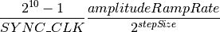
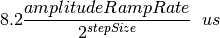
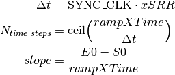
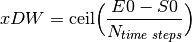
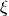
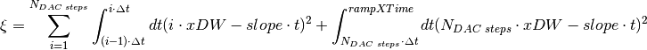
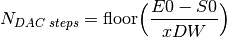
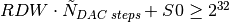
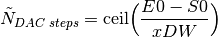

AD9958 real time RF source¶
INTRODUCTION¶
The AD9958 Python library provides a configurable and harware timed interface for a AD9948 DDS. The defined commands are sent over the provided serial port to the chipKit max32 microcontroller and loaded onto the onboard task stack. Once the task stack gets started, the saved commands are issued sequentially and the AD9958 gets programed over SPI in real time. Please check the provided examples for more details on the different operational modes.
CODE¶
-
class
AD9958.AD9958_class(ser, ref_clk, PLL_multiplier, chipkit_clk)[source]¶ Main AD9958 class
Parameters: - ser (serial.Serial) – Serial port object
- ref_clk (int) – REF_CLK frequency in Hz.
- PLL_multiplier – PLL multiplier for the AD9958 (SYS_CLK=ref_clk*PLL_multiplier)
- chipkit_clk (int) – System clock of the chipkit Max 32
-
checkLenRequest()[source]¶ Returns the number of requested function stack instructions.
Returns: Message of type Requested instructions: X.
-
checkLenStack()[source]¶ Returns the current and maximum number of programmed instructions on the function stack.
Returns: Message of type Programmed instructions: X (max len Y).
-
checkStackFinished()[source]¶ Checks if the function stack execution is finished. Returns True if the funtion stack is empty or under consytruction. Return False if the function stack is still in execution (after calling runStack()).
Returns: True/False.
-
clearPhaseAccumulator(doIO_update=True)[source]¶ Clears the phase accumulator of the AD9958. It enables and disables the autoclear phase accumulator.
-
configureSysClock()[source]¶ Configures the SYS_CLK of the AD9958: sets the VCO gain and the PLL_MULTIPLIER.
-
delayTimer(time)[source]¶ Holds the execution for the given amount of time. Uses Timer 2 and Timer 3 of the Chipkit Max32 in 32 bit mode.
Parameters: time (float) – Hold time in seconds (max. 52s)
-
disableAutomaticRURD()[source]¶ Disables the automatic ramp up/down feature controled by
AD9958_class.setRampPins().
-
enableAutomaticRURD(stepSize, amplitudeRampRate)[source]¶ Enables the automatic ramp up/down feature controled by
AD9958_class.setRampPins().The total time elapsed after a full ramp up/down is:

For SYS_CLK=4xSYNC_CLK=500MHz this reduces to:

Parameters: - stepSize (int) – DAC step size selector. Accepted values: {0,1,2,3}.
- amplitudeRampRate (int) – Prescaler for the internal counter. Accepted values: 1-255.
-
findOptimalRamp(rampTypeSelect, lowValue, highValue, rampUpTime, rampDownTime)[source]¶ Finds the optimal values for RSRR,RDW,FSRR,FDW for a given ramp. Each rising (R) or falling (F) ramps is characterized by a rising/falling delta word xDW and rising/faling delta time calculated from xSRR. For a given xSRR the time steps, the total number of initiated time steps and slopes are:

where SYNC_CLK=SYS_CLK/4=125MHz and S0 and E0 are the start and end points of the ramp written into the 32 bit registers of the AD9958. The xDW is calculated as follows:

The figure of merit  evaluates the deviation form the obtained sweep to an ideal linear ramp:

where 
For all xSRR ranging form 1 to 255, the figure of merit is evaluated analytically. The mimum of them is chosen as the optimum ramp parameter.
Parameters: - rampTypeSelect – Type of ramp: “amplitude”, “frequency” or “phase”.
- lowValue (float) – Low value in the units of amplitude,frequency or phase.
- highValue (float) – High value in the units of amplitude,frequency or phase.
- rampUpTime (float) – Ramp up time in s.
- rampDownTime (float) – Ramp down time in s.
Returns: [RSRR,RDW,FSRR,FDW]
Warning
The AD9958 register overflows during a rising sweep when  where . The current implementation of
AD9958_class.findOptimalRamp()excludes solutions leading to a register overflow. In case no alternative solution can be found, an error is raised and [0,0,0,0] is returned.
-
resetTimer()[source]¶ Resets the internal timer (Timer 4 and Timer 5 of the Chipkit Max32) used for
AD9958_class.waitForTimer().
-
setAmplitude(channelId, amplitude)[source]¶ Sets the amplitude for a given channel ID.
Parameters: - channelId (int) – channel ID (minVal=0 maxVal=15)
- amplitude (float) – amplitude (minVal=0 maxVal=1)
-
setAmplitudeTuningWord(channelId, tuningWord)[source]¶ Sets the amplitude tuning word. Perfroms the amplitude register mapping from channelId to the AD9958 register addresses.
Parameters: - channelId (int) – channel ID (minVal=0 maxVal=15)
- tuningWord (int) – amplitude tuning word (minVal=0 maxVal=2^10-1)
-
setAutomaticRURDPins(ch0Flag, ch1Flag)[source]¶ Sets the amplitude to be ramped up or down on channel 0 and channel 1 .
Parameters: - ch0Flag (bool) – amplitude ramp flag (True->ramp up; False->ramp down)
- ch1Flag (bool) – amplitude ramp flag (True->ramp up; False->ramp down)
-
setEnabledChannels(setCh0Enabled, setCh1Enabled)[source]¶ Sets the enabled channels for the communication (read/write) of the AD9958 registers. The communication will only affect the channel with a logic high value.
Parameters: - setCh0Enabled (bool) – Flag for channel 0 (True-> comm. enabled ; False-> comm. disabled).
- setCh1Enabled (bool) – Flag for channel 1 (True-> comm. enabled ; False-> comm. disabled).
Note
Channels 0x00, 0x01 and 0x02 are shared registers and get programmed regardless of the enabled channels settings.
-
setFreq(channelId, freq)[source]¶ Sets the frequency for a given channel ID.
Parameters: - channelId (int) – channel ID (minVal=0 maxVal=15)
- freq (float) – frequency in Hz (minVal=0 maxVal=SYS_CLK*(2^32-1)/2^32= 499999999.8835)
-
setFreqTuningWord(channelId, tuningWord)[source]¶ Sets the frequency tuning word. Perfroms the frequency register mapping from channelId to the AD9958 register addresses.
Parameters: - channelId (int) – channel ID (0-15)
- tuningWord (int) – frequency tuning word (minVal=0 maxVal=2^32-1)
-
setModulationMode(modulationTypeSelect, modulationLevelSelect, priorityChannel)[source]¶ Enables the modulation mode. For modulation levels 8 and 16, the PPC bits are set such that the profile PINs are only assigned to the priority channel.
Parameters: - modulationTypeSelect (str) – Type of modulation: “amplitude”, “frequency” or “phase”.
- modulationLevelSelect (int) – Depth of modulation: 2,4,8,16.
- priorityChannel (int) – Channel (0 or 1) for which the modulation is set up in case of modulations levels 8 and 16.
-
setModulationRegister(regChannel0, regChannel1)[source]¶ Sets the active amplitude/frequency/phase register for the ongoing modulation/sweep. Profile pins are set according to the modulation level and priority channel (encoded in PPC).
Parameters: - regChannel0 (int) – Active register for channel 0.
- regChannel1 (int) – Active register for channel 1.
-
setPhase(channelId, phase)[source]¶ Sets the phase for a given channel ID .
Parameters: - channelId (int) – channel ID (minVal=0 maxVal=15)
- phase (float) – phase in degrees (minVal=0 maxVal=360*(2^14-1)/2^14=359.9780)
-
setPhaseTuningWord(channelId, tuningWord)[source]¶ Sets the phase tuning word. Perfroms the phase register mapping from channelId to the AD9958 register addresses.
Parameters: - channelId (int) – channel ID (minVal=0 maxVal=15)
- tuningWord (int) – phase tuning word (minVal=0 maxVal=2^14-1)
-
setProfilePins(pin0Flag, pin1Flag, pin2Flag, pin3Flag)[source]¶ Sets the profile pins output sates.
Parameters: - pin0Flag (bool) – Profile pin 0 state.
- pin1Flag (bool) – Profile pin 1 state.
- pin2Flag (bool) – Profile pin 2 state.
- pin3Flag (bool) – Profile pin 3 state.
-
setRegister(registerAddress, registerValue, doIO_update=True)[source]¶ Sets an internal register of the AD9958
Parameters: - registerAddress (int) – Register address.
- registerValue (int) – Value to be written into the register.
- doIO_update (bool) – Performs an IO update after writting to the register (Default is True).
-
setSweepMode(sweepTypeSelect)[source]¶ Enables the sweep mode.
Parameters: sweepTypeSelect (str) – Type of sweep: “amplitude”, “frequency” or “phase”.
-
setSweepParameters(lowValue, highValue, rampUpTime, rampDownTime)[source]¶ - The optimal RSRR,RDW,FSRR,FDW values are found using
AD9958_class.findOptimalRamp().Parameters: - lowValue (float) – Low value in the units of amplitude,frequency or phase.
- highValue (float) – High value in the units of amplitude,frequency or phase.
- rampUpTime (float) – Ramp up time in s.
- rampDownTime (float) – Ramp down time in s.
Warning
The optimal ramp found via
AD9958_class.findOptimalRamp()is protected from a register overflow. However, if highValue is too close to its maximum, there might be no suitable ramp up for the chosen parameters. In this case, an error message is raized and RSRR,RDW,FSRR,FDW are set to 0.
-
setTriggerOut(flag)[source]¶ Sets the state of the output trigger pin.
Parameters: flag (bool) – Trigger state.